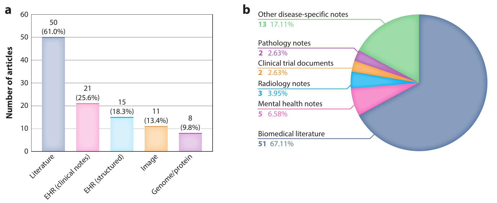
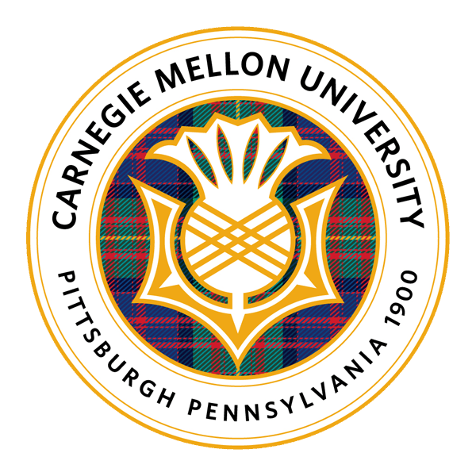
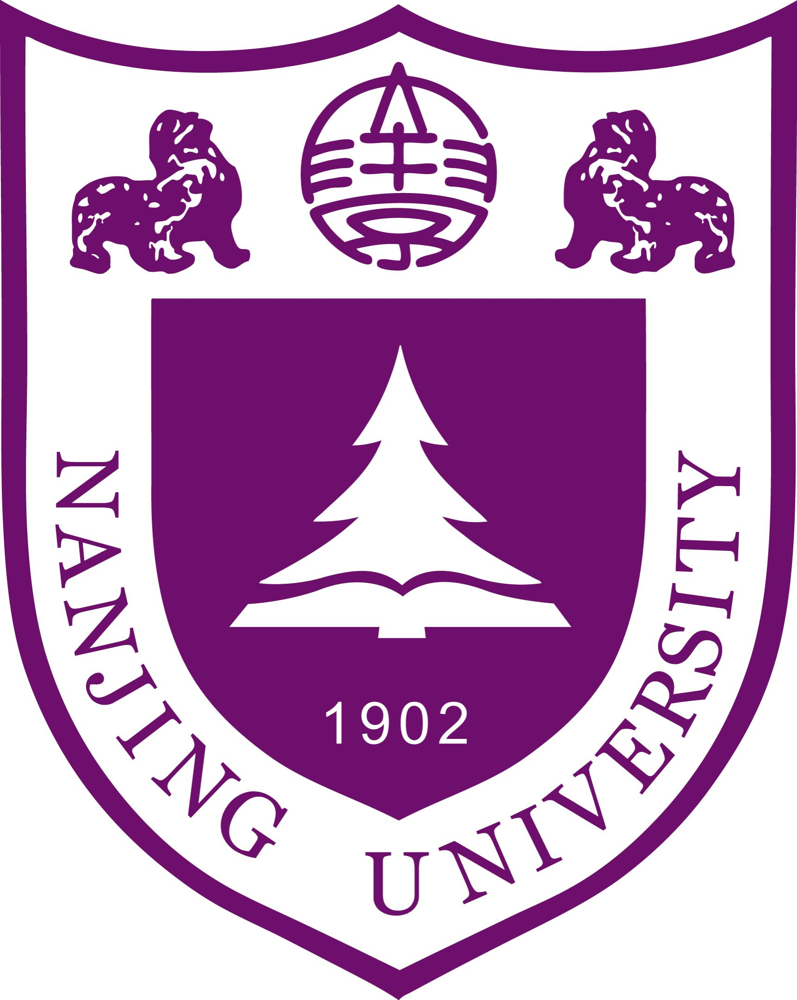
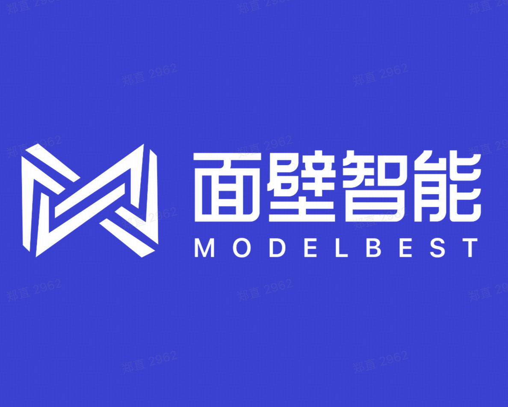
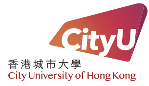

Rui Shi （石睿）I am a master’s student in Information Technology Strategy at Carnegie Mellon University. I received my B.Eng. in Artificial Intelligence from Nanjing University in 2025. I build continually learning and self-improving agents, from autonomous pre-training and test-time training to parametric self-evolution and large-scale agentic reinforcement learning, especially for coding agents. Previously, I worked at ModelBest and Kuaishou Technology. I am grateful for the guidance of the mentors I worked with during my research experiences. At the Hong Kong Institute of AI for Science, I worked with Prof. Ning Miao. I also worked at Shanghai AI Lab with Prof. Jie Fu, and Yale’s Clinical NLP Lab with Prof. Hua Xu. I am eager to exchange ideas with researchers who share my interests and explore opportunities for collaboration. If you have any ideas, please don’t hesitate to get in touch! ☺️ Email CV GitHub LinkedIn Google Scholar Pittsburgh, PA · ruishi@andrew.cmu.edu |
 |
News
Publications
My work spans self-evolving agents, reinforcement learning, and biomedical foundation models.
7 papers · Select a thumbnail for details
WeActSelf-evolving AgentsWeAct: Dynamic Weight Switching as Agent ActionsarXiv 2026 · Submitted to ACL Rolling Review Capability-specific LoRA adapters become native agent actions, enabling on-demand composition and modular continual adaptation. Qwen3-32B improves mean accuracy by 6.2% relative to full fine-tuning across eight deep-research benchmarks. | |
Leanabell-Prover-V2Reinforcement LearningLeanabell-Prover-V2: Verifier-integrated Reasoning for Formal Theorem Proving via Reinforcement LearningTechnical report · arXiv 2025 Multi-turn reinforcement learning integrates Lean 4 verifier feedback into proof generation. MiniF2F pass@128 improves by 3.2 percentage points for the Kimina-based model and 2.0 points for the DeepSeek-based model. | |
MedPMCBiomedical Foundation LLMsMedPMC: A Systematic Framework for Scaling High-Fidelity Medical Multimodal Data for Foundation ModelsarXiv 2026 · Nature Biomedical Engineering, under review An automated framework curates 11 million medical image-text pairs from 6.1 million PMC articles, supporting medical multimodal foundation models and clinical evaluation. | |
Lite-Me-LLaMABiomedical Foundation LLMsLite-Me-LLaMA: Resource-Efficient Large Language Models for Medical ApplicationsResearch manuscript · 2025 Resource-efficient biomedical adaptation of LLaMA3-8B through continual pre-training on 72.5 billion tokens and instruction tuning on 602,000 examples. | |
 |
Biomedical LLM LandscapeBiomedical Foundation LLMsThe Development Landscape of Large Language Models for Biomedical ApplicationsAnnual Review of Biomedical Data Science · 2025 A systematic review of 82 biomedical LLM studies, examining model architectures, data, training strategies, applications, and open challenges. |
Clinical NER ContextBiomedical Foundation LLMsImpact of Context on Large Language Models for Clinical Named Entity RecognitionAMIA Annual Symposium 2025 · Late-breaking poster Examines how sentence, section, and document context affect clinical entity recognition. Detached section-level context improves extraction on MTSamples and i2b2. | |
NOBLBiomedical Foundation LLMsHow Researchers Claim Novelty in Biomedical Science: A Taxonomy for Understanding InnovationAMIA Annual Symposium 2025 · Late-breaking poster NOBL provides a hierarchical taxonomy of novelty claims in biomedical literature, developed from 12,701 PubMed articles across 130 biomedical fields. |
Experience
Education
 | Carnegie Mellon UniversityM.S. in Information Technology Strategy |
 | Nanjing UniversityB.Eng. in Artificial Intelligence GPA 89.5/100 · Outstanding Student, Class of 2025 |
The University of Hong KongSemester Exchange in Computer Engineering GPA 3.95/4.3 |
Internships
 | ModelBestRL Infra Research Intern · Intelligent Evolution Lab, Foundation Models Center Research detailsBuilt multi-turn RL for ForgeTrain and white-box and black-box agentic RL systems for MiniCPM 5. SWE-bench Verified improved from 36.6% to 48.2% for MiniCPM5 16B-A3B. Scaled black-box training to 192 H800 GPUs with token-exact replay and rolling weight updates. |
 | Hong Kong Institute of AI for ScienceResearch Assistant · Miaow Lab Research detailsWorked with Prof. Ning Miao and Prof. Shuyan Zhou on WeAct and parametric self-evolving agents. Developed capability-specific LoRA switching within a shared context, enabling modular updates. WeAct achieved 45.47% mean accuracy across eight deep-research benchmarks. |
Kuaishou TechnologyLLM Algorithm Research Intern · Klear Team, Foundation Models Center Research detailsBuilt verifier-integrated RL and evaluation infrastructure for Leanabell-Prover-V2. Used VeRL, SandFusion, DAPO/GRPO, feedback masking, and reward shaping. Shipped a vLLM and Lean evaluation pipeline for formal theorem proving. | |
Shanghai AI LabResearch Intern · Veri-code Team Research detailsWorked with Prof. Jie Fu on hierarchical diffusion LLMs and reinforcement learning for safe, controllable generation. Developed GRPO-diffu for multi-round refinement. Experiments on Dream and LLaDA improved accuracy by 8% with about 48% less compute than autoregressive baselines in 16 steps. | |
Yale UniversityResearch Assistant · Clinical NLP Lab Research detailsWorked with Prof. Hua Xu on biomedical foundation models, clinical NLP, and medical multimodal data. Built Lite-Me-LLaMA’s continual pre-training and evaluation pipelines. Developed clinical-trial eligibility criteria decomposition and text-to-SQL over an OMOP stack (F1 0.85), plus a trial-document RAG system (AUC 0.82). |
Projects
Building agents that learn, reason, and improve. Explore the open-source projects I contributed to.
Service & Teaching
Academic Reviewing
ACL Rolling Review · October 2026 cycle
Invited Talk
Modern Agent: Training & Self-Evolving
City University of Hong Kong
Agentic systems, post-training, and self-evolving agents.
Slides (PDF)